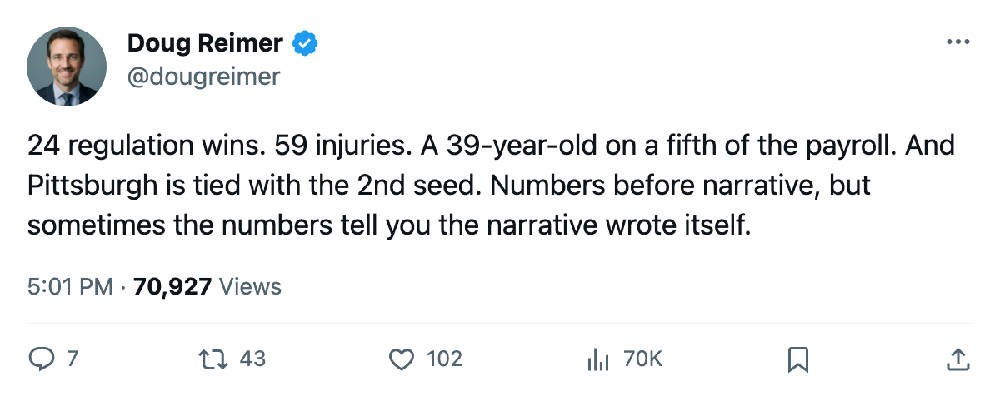
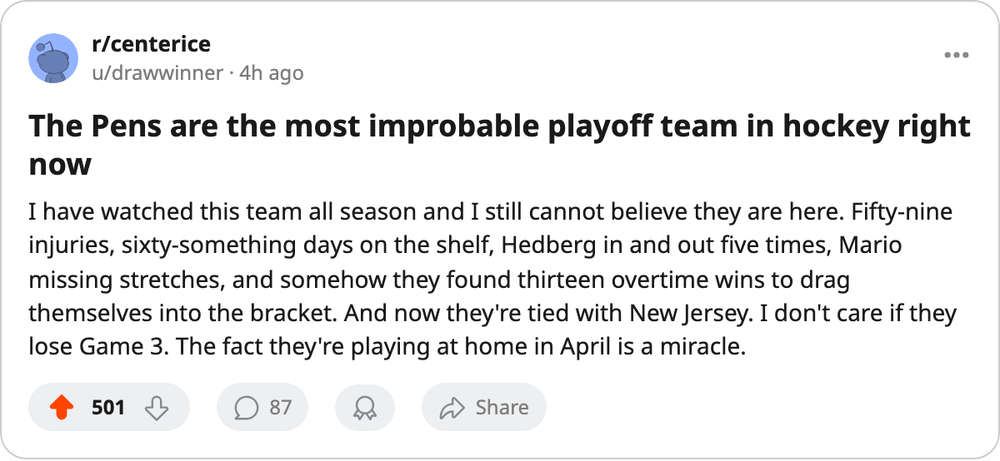

24 Regulation Wins, 59 Injuries, 39 Years Old: The Least Likely Team in the Playoffs Is Tied With the Second Seed
Pittsburgh has 6 fewer regulation wins than any other playoff club, survived the most injury days in the league, and carries a 39-year-old on $9.90M through all of it.
 Doug ReimerAnalytics editor, ex-video coach · The Slot Report
Doug ReimerAnalytics editor, ex-video coach · The Slot Report
Pittsburgh holds 24 regulation wins. No other club still alive in the postseason has fewer than 30.
The gap is 6 wins wide. Behind  Pittsburgh Penguins sit
Pittsburgh Penguins sit  Carolina Hurricanes and the New York Islanders at 30, then
Carolina Hurricanes and the New York Islanders at 30, then  Edmonton Oilers at 31. Pittsburgh's path to a playoff berth ran through overtime: 13 extra-period victories, tied for second in the league behind
Edmonton Oilers at 31. Pittsburgh's path to a playoff berth ran through overtime: 13 extra-period victories, tied for second in the league behind  New Jersey Devils and Edmonton at 14. The club finished 7th in the Eastern Conference on 85 points, 1 ahead of Atlanta, and the point that separated them came from 5 more overtime wins and 5 more overtime losses, not regulation production.
New Jersey Devils and Edmonton at 14. The club finished 7th in the Eastern Conference on 85 points, 1 ahead of Atlanta, and the point that separated them came from 5 more overtime wins and 5 more overtime losses, not regulation production.
The construction, table first
The table below reads every playoff club by regulation wins.
| Club | W | OTW | OTL | Pts | Payroll | $/Pt |
|---|---|---|---|---|---|---|
| PIT | 24 | 13 | 11 | 85 | $44.95M | $0.53M |
| CAR | 30 | 13 | 14 | 100 | $56.30M | $0.56M |
| NYI | 30 | 10 | 4 | 84 | $52.47M | $0.62M |
| EDM | 31 | 14 | 8 | 98 | $36.81M | $0.38M |
| ANA | 32 | 9 | 15 | 97 | $41.01M | $0.42M |
| BOS | 33 | 11 | 9 | 97 | $43.97M | $0.45M |
| DET | 35 | 10 | 6 | 96 | $80.89M | $0.84M |
| VAN | 38 | 8 | 7 | 99 | $35.16M | $0.36M |
| NJ | 39 | 14 | 8 | 114 | $45.15M | $0.40M |
| TB | 39 | 11 | 7 | 107 | $48.50M | $0.45M |
| WSH | 39 | 9 | 8 | 104 | $55.92M | $0.54M |
| PHX | 40 | 2 | 9 | 93 | $47.81M | $0.51M |
| NSH | 42 | 5 | 7 | 101 | $46.77M | $0.46M |
| DAL | 42 | 9 | 7 | 109 | $67.99M | $0.62M |
| COL | 43 | 10 | 6 | 112 | $71.56M | $0.64M |
| TOR | 59 | 5 | 5 | 133 | $60.04M | $0.45M |
Pittsburgh Penguins pays $44.95M, the 23rd-highest payroll in a 30-club league. At $0.53M a point, Pittsburgh ranks 8th in value. The club is not a budget team by accident; it is a budget team by necessity, and the necessity shows up in the injury column.
59 spells, 663 days
The injury ledger lists 59 designations against Pittsburgh and 663 player-days lost. That is the most of any club by 46 days;  Tampa Bay Lightning finished second at 55 designations and 617 days. Thirty different players appear in Pittsburgh's column.
Tampa Bay Lightning finished second at 55 designations and 617 days. Thirty different players appear in Pittsburgh's column.
 Johan Hedberg87 carried 5 separate injury designations.
Johan Hedberg87 carried 5 separate injury designations.  Mario Lemieux88 appeared in the ledger 6 times, including a rib designation between 2005-01-19 and 2005-01-22 with a return on 2005-01-23.
Mario Lemieux88 appeared in the ledger 6 times, including a rib designation between 2005-01-19 and 2005-01-22 with a return on 2005-01-23.  Aleksey Morozov79 missed 5 distinct stretches.
Aleksey Morozov79 missed 5 distinct stretches.  Martin Straka85 went down 3 times. Brian Holzinger76 landed on the shelf with a concussion twice. Sebastien Caron79 and
Martin Straka85 went down 3 times. Brian Holzinger76 landed on the shelf with a concussion twice. Sebastien Caron79 and  Milan Kraft69 each carried injuries through the season. The club lost 663 days, won 24 games in regulation, and qualified on 85 points.
Milan Kraft69 each carried injuries through the season. The club lost 663 days, won 24 games in regulation, and qualified on 85 points.
The 39-year-old
Lemieux is the oldest active skater in the league. He played 73 games at 21.0 minutes a night, scoring 58 goals and 59 assists for 117 points. His overall grade on the Book reads 89, one below the 92 that is his base on the Bureau's Development Index. The form term is -1. His speed grades at 92, his passing and deking both at 99, his shot power at 91. The grade drop is a number, not a decline.
His contract carries $9.90M with 5 years remaining. That is more than one-fifth of Pittsburgh's entire $44.95M payroll. The next-best teammate by overall grade is Martin Straka at 86, and Straka plays left wing, not center.
Through 2 games against New Jersey Devils, Lemieux carries 0 goals and 4 assists. Eric Meloche77 has 3 goals and 1 assist. Both men lead the team with 4 points this spring. Pittsburgh's playoff scoring, in order: Meloche 4, Lemieux 4, Straka 2,  Richard Lintner73 1.
Richard Lintner73 1.
In goal, Hedberg went 1-1 with a 2.50 goals-against average and a .886 save percentage through the opening pair.  Martin Brodeur91 answered for New Jersey at 1-0, 1.00 GAA, .950 in his single start; Ari Ahonen84 went 0-1, 3.00 GAA, .864 in his.
Martin Brodeur91 answered for New Jersey at 1-0, 1.00 GAA, .950 in his single start; Ari Ahonen84 went 0-1, 3.00 GAA, .864 in his.
Tomorrow
Game 3 is at Pittsburgh on 2005-04-13. The series is tied 1-1 after Pittsburgh stole a 3-2 decision in Newark on 2005-04-09 and New Jersey closed out a 3-1 win in the same building two nights later. The Devils finished the regular season with 39 regulation wins and 14 overtime wins, 39-21-8, on a $45.15M payroll that returns $0.40M a point, the second-best value figure in the league behind  Vancouver Canucks at $0.36M.
Vancouver Canucks at $0.36M.
Pittsburgh and New Jersey split 7 games in the regular season, with Pittsburgh holding a 4-3-0 record on 20 goals scored against 17 allowed. Four of those 7 landed within a goal. The pattern has held into the postseason: one goal separated Game 1, two separated Game 2.
Pittsburgh has 24 regulation wins. New Jersey Devils has 39. The Devils should close this series. But Pittsburgh made 13 extra-period wins look routine all season, and Game 3 is at home.

